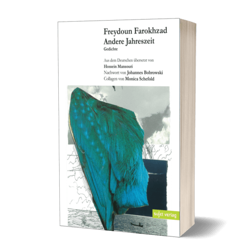

Примеры поэзии Ферейдуна из сборника "Andere Jahreszeit"/"Другое время года" (1964):
(Перевод на русский Каспара Кадо)

Die Stimme
Für Bele Bachem
Alter Kater
der in den Augenschatten liegt
und die Gedanken erleuchtet
Bunte Lampions
zwischen schweigenden Wimpern
Die Stimme.
Ungewollt gehst du ihr nach.
Suchst du ihre Fuβspuren
auf deiner feuchten Zunge,
streust du Angeln
für ihre leuchtenden Forellen
bis ihr letzter Klang verstummt.
Und plötzlich ist sie wieder da:
Eine Windrose in deinem Gesicht.
Голос
посвящается Бэль Бахем
Старое похмелье
свернулось котиком в тенях под глазами
освещая мысли
Цветные фонарики
меж молчаливых ресниц
Тот голос.
Ненамеренно ты следуешь за ним.
Ищешь его следы
на своём влажном языке,
забрасываешь сети
на его блестящую форель
пока последний звук не исчезнет.
И вдруг - она снова здесь:
роза ветров на твоём лице.
Andere Jahreszeit
Der Sommer war
eine durstige Schwalbe
die an den Luftspiegelungen
starb
der Herbst
ein melancholisches Kapitel
das ich zu Ende las
wollen wir nun
durch die tote Landschaft
gehen
und nach den müβigen
Sensen fragen
oder schwarze Handschuhe
anziehen
um dem Winter
ein biβchen Wärme entgegen
zu tragen.
Другое время года
Лето было
жаждущей ласточкой
что умерла
от миражей
осень
меланхоличная глава
которую я прочёл до конца
побредём же теперь
через мёртвый пейзаж
расспрашивая
об усталых косах
или наденем
чёрные перчатки
чтобы сберечь
немного тепла
перед зимой.
Illusion
Eine Feder
in deiner Hand
ist ein Vogel
Vögel
sind schwer
zu halten
sie fliegen
gern
Die Feder
in deiner Hand
ist ein toter Vogel
er kann nicht
fliegen
Иллюзия
Перо
в твоей руке
это птица
Птиц
тяжело
удержать
они любят
летать
Перо
в твоей руке
это мёртвая птица
она
не летает
Krieg
Die Uhr sitzt
wie ein Glühwurm
an einer Hand
und weiβ nicht
daβ sie niemandem
gehört.
Zeit der zerstampften
Finger
die als Schweigen
zwischen dem alten Pfalster
sterben.
Die Überlebenden
reiben sich die Augen
und murmeln leise:
nie mehr wieder.
Война
Часы сидят
словно светлячок
на руке
и не знают
что больше никому
не принадлежат.
Время раздавленных
пальцев
что как тишина
между старых булыжников
гибнут.
Выжившие
трут глаза
и бормочут тихо:
никогда больше.
Ungehört
Ich will nicht, daβ die Priester
Flugzeuge segnen, Kanonen einweihen
daβ das Blut der Wehrlosen
die Bibel durchtränkt
das Kreuz überschwemmt
ich will nicht, daβ die Ruinen
sich auf unserer Brust ausbreiten
daβ die ausgeschlafenen Uniformen
über unsere Zukunft stampfen
will nicht, daβ die Blumen
in der Salzwüste Zuflucht suchen
daβ die schönen, schweigenden Tiere
aus der Welt verschwinden
will keine Sonne, die tausend Sonnen ist
Keinen weiβen Pilz, der in der Hölle blüht
will kein Heil
durch das schreckliche Unheil
will kein Gesang
aus kopflosen Vogelleibern.
Неуслышанное
Я не хочу, чтобы церковь
освящала самолёты, благославляла пушки,
чтобы кровь невиновных
впиталась в Библию
и затопила распятие.
Я не хочу, чтоб руины
раскинулись на нашей груди
хорошо отдохнувшие униформы
протоптались по нашему будущему
Я не хочу, чтоб цветы
искали убежища в солёной пустыне
прекрасные, тихие звери
исчезали с лица земли
Я не хочу солнца, что словно тысяча солнц
белого гриба, что процветает в аду
Не хочу никакого спасения
через страшную катастрофу
и никаких песен
от обезглавленных птичьих тел.
Полный сборник (на немецком и английском) доступен здесь: [pdf]